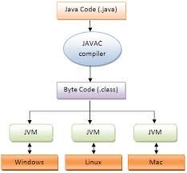

Programação Orientada a Objetos
Paradigma Orientado a Objeto, Classe e Objeto
Professor: Juliano Fischer Naves / juliano.naves@ifro.edu.br
Ementa
- Paradigma Orientado a Objeto, Classe e Objeto
- Mensagem e encapsulamento
- Modificadores de Acesso
- Herança
- Polimorfismo
- Ligação Dinâmica
- Tratamento de Exceções
- Coleções
- Classes Abstratas
- Interface
- Atributos e Métodos Estáticos
- Arquivos
- Genéricos
- Modelagem UML
- Swing
- Padrões de Projeto
Roteiro
Paradigmas de Programação
- Programação Imperativa
- Programação Funcional
- Programação em Lógica
- Programação Orientada a Objetos
Classes
Objetos
Exercícios
Paradigmas de Programação
Definição (TUCKER, 2008):
...um paradigma de programação é um padrão para a resolução de problemas relacionados a um determinado gênero de programas e linguagens.
Paradigma Imperativo
- Baseado em ações ou comandos que mudam o estado (variáveis) do programa
- Programador diz ao programa o que fazer
- Baseado na arquitetura de John Von Neumann
- C, Fortran, Pascal ...
Linguagem C
Ler dois números e somá-los
#include "stdio.h"
int main()
{
int n1, n2;
printf("Digite dois números inteiros:\n");
scanf("%d %d", &n1, &n2);
printf("A soma dos números %d e %d é: %d.\n”, n1, n2, n1+n2);
return 0;
}
Paradigma Funcional
- Baseado em avaliação de funções matemáticas
- Evita estados
- LISP, Scheme, ...
Linguagem LISP (CLISP)
Somar dois números
(defun soma (x y) (+ x y))
(soma 1 3)
4
Paradigma Lógico
- Raízes na lógica formal
- Fornece-se fatos e regras a uma base de dados
- Posteriormente, consultas são feitas a esta base
- PROLOG
gato(tom).
gato(garfield).
rato(jerry).
leao(simba).
felino(X) :- gato(X);leao(X).
felino(simba).
yes
felino(tom).
yes
felino(jerry).
no
Paradigma Orientado a Objetos
- Baseado na interação e composição entre objetos
- Abstrai o mundo real
- "Simulação" do mundo real
- Java, C++, Smalltalk ...
Classe
Que figura é essa?
Como você sabe?
Classe
Definição:
Representa um conjunto de características e comportamentos para um determinado conjunto de objetos.
Quais as características dos triângulos?
Objeto
Definição:
Um objeto e uma instância (exemplo, modelo, amostra, espécime...) de uma classe.
Exemplo: somos objetos da classe Humanos
Atributo
Definição:
É uma característica dos objetos de uma classe.
Exemplo: nome, altura e peso são atributos da classe Humano
Método
Definição:
É uma ação que os objetos de uma classe pode realizar.
Alimentar-se, Andar e Falar são ações que os objetos da classe humano podem realizar.
Processo de Abstração
Definição:
Processo para representar um grupo de objetos através de seus atributos, selecionando determindos aspectos de um problema.
Processo de Abstração
Passos:
- Classificação: categorização dos objetos em grupos com base nos atributos comuns.
- Generalização/Especialização: A partir de dois ou mais objetos, abstrai-se uma categoria mais genérica.
- Agregação/Decomposição: Composição de uma nova categoria como um agregado de categorias pré-existentes.
Conceitos de O.O. - Coesão
Definição:
Indica o grau em que uma classe tem uma finalidade única e bem orientada.
Conceitos de O.O. - Acoplamento
Definição:
É o grau em que uma classe conhece sobre os membros de outra classe.
Questões
É preferível Alta ou Baixa coesão?
É preferível Alto ou Baixo acoplamento?
Java - História
- Criada na década de 90 (primeira aparição 1995)
- Equipe de inovação da Sun Microsystems (green team)
- Chefiada por James Gosling
- 1995: Netscape incorpora Java
Java - Hoje
- Plataforma de desenvolvimento mais utilizada no mundo
- Estima-se 10 milhões de desenvolvedores
- 1 bilhão de downloads anuais
- 97% dos computadores corporativos rodam Java
- 100% do Blu-ray players rodam Java
- 3 bilhões de celulares rodam Java
- 125 milhões de TVs
- 5 bilhões de Java Cards em uso
Java - Máquina Virtual

Java - Tipos de Dados
- boolean
- byte
- short
- char
- int
- float
- long
- double
Java - Classe String
Representa uma cadeia de caracteres
String str = "abc";
char data[] = {'a','b','c'};
String str2 = new String("data");
Java - Observações
- É case sensitive
- Não existe ponteiro em Java. Somente referências a objetos.
- .java: código fonte
- .class: código intermediário (bytecode)
Java - Observações
O nome do arquivo .java DEVE ser o mesmo nome da classe
Exemplo:
NomeClasse.java
public class NomeClasse {
tipo atributo1;
tipo atributo2;
...
}
Java - Observações
As classes Java obedecem um estrutura de pacotes (package) de acordo com o caminho do código fonte dentro das pastas
Exemplo:
[PATH]/br/ufmt/exemplo/NomeClass.java
package br.ufmt.exemplo;
public class NomeClasse {
tipo atributo1;
tipo atributo2;
...
}
Java - Ambiente
- JRE: Java Runtime Environment
- Máquina Virtual Java (JVM)
- JDK: Java Development Kit
- javac - compilador
- java - interpretador
- javadoc - gerador de documentação
- jdb - debugger
- jar - ferramenta para gerência de Java Archives
- javap - disassembler
Exercícios
Crie as seguintes classes:
- Representa um conjunto de clientes de uma loja.
- Representa um conjunto de produtos de uma loja.
- Representa um conjunto de quadrados.
- Representa um conjunto de círculos.
Classe Cliente
class Cliente{
String nome;
String endereco;
String cpf;
int idade;
}
Classe Produto
class Produto{
String nome;
String codigoDeBarras;
double peso;
double preco;
String marca;
}
Classe Quadrado
class Quadrado{
double tamanhoDoLado
int x;
int y;
String cor;
}
Classe Círculo
class Circulo{
int x;
int y;
double raio;
}
Agradecimentos
- Professor Raphael de Souza Rosa Gomes (UFMT)
- Professora Karen Figueiredo (UFMT)
Bibliografia
- TUCKER, Allen B; NOONAN, Robert E. Linguagens de programação: princípios e paradigmas. 2. ed. São Paulo: McGraw-Hill, 2008
- SIERRA, Kathy e BATES, Bert. Guia de Estudo: Certificação para Programador Java 6